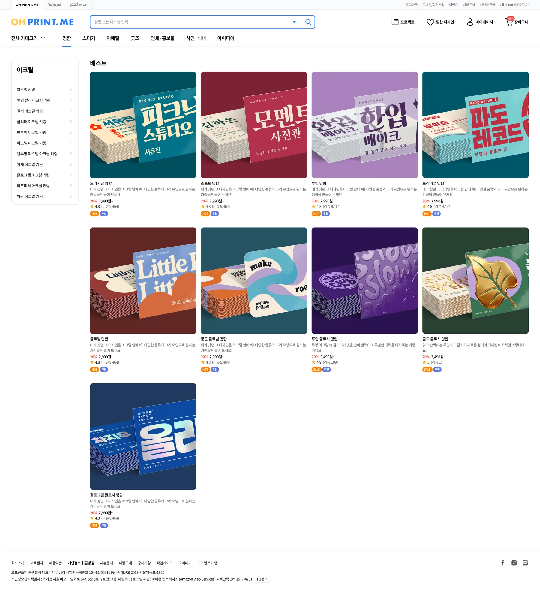
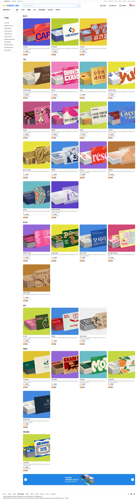
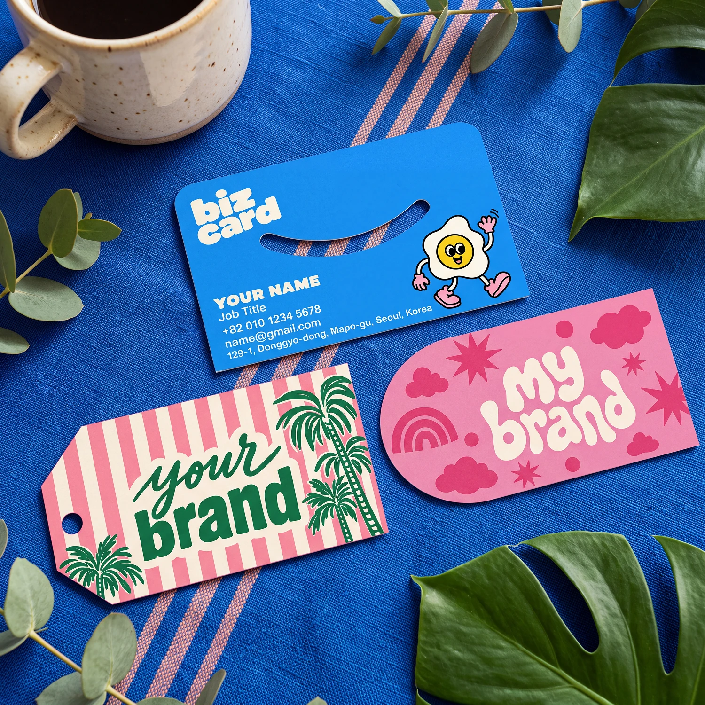
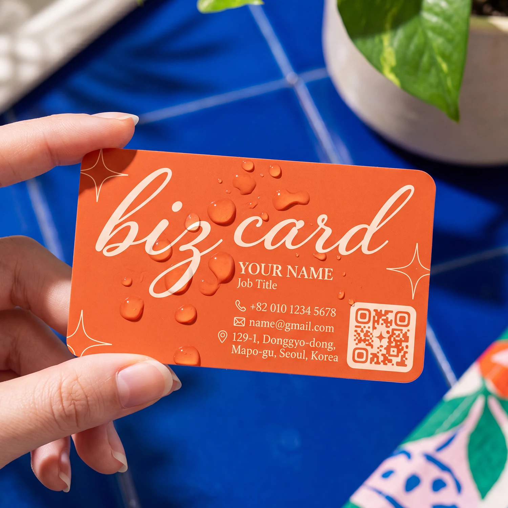
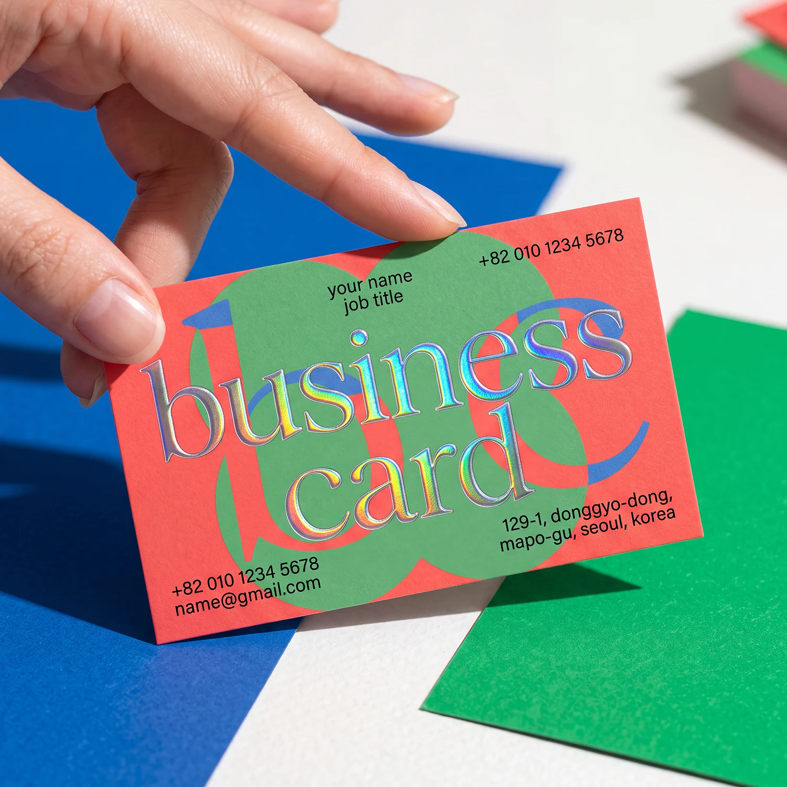
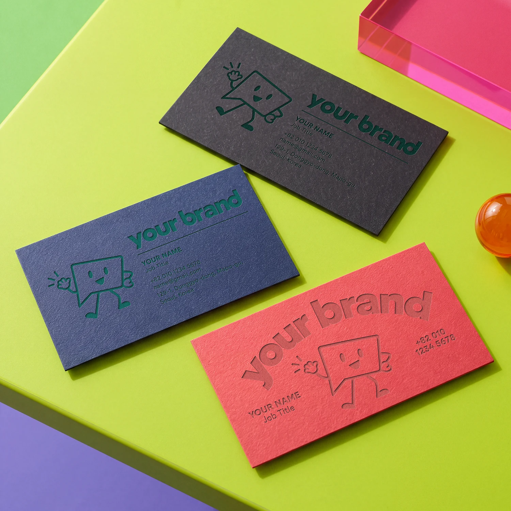
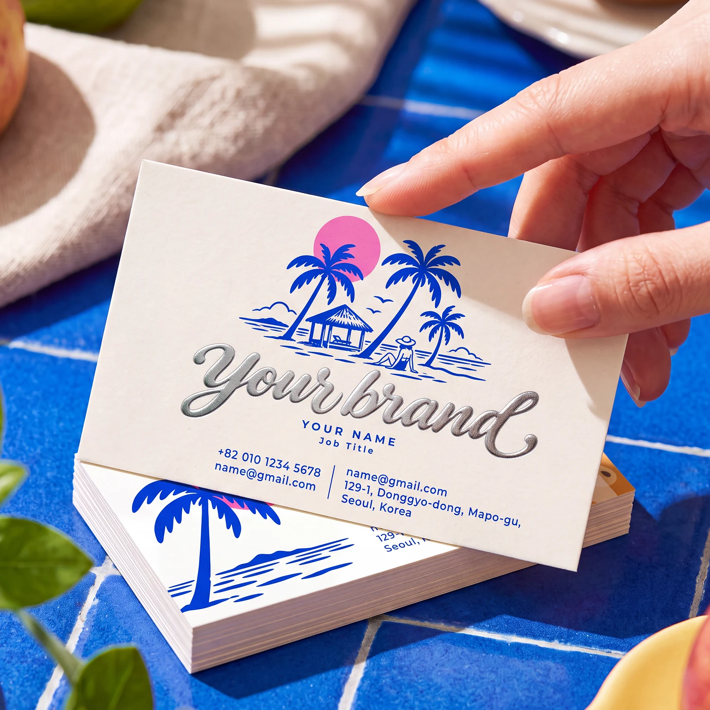
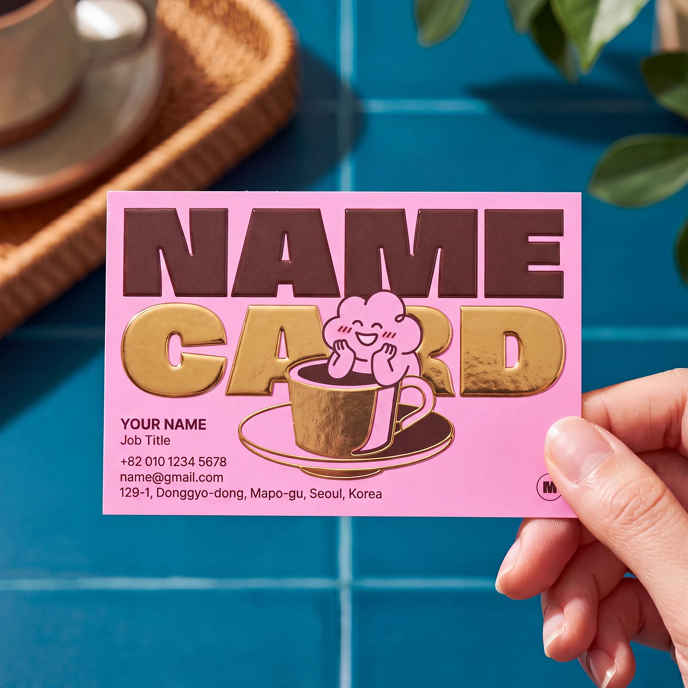

← 모든 작업물AI / 13
Business Card
와우프레스 명함 비주얼 콘텐츠 제작
2026- 제작 연도
- 2026
- 작업 기간
- 연출컷 2일 (120컷)
오버뷰 3일 - 사용 프로그램
- OpenRouter
기여도 및 작업 범위
기여도 100%
명함 약 40종을 한 번에 런칭하는 프로젝트에서 상품별 연출컷을 제작했습니다. 연출컷 제작에는 자동화 에이전트로 2일이 소요됐습니다. 오버뷰의 경우 모든 이미지가 동일한 포맷이고, 명함에 삽입되는 아트웍과 효과를 별도로 생성해야 퀄리티가 높아져 3일 소요되었습니다. 제품에 인쇄된 아트웍 또한 AI 생성이미지입니다.







